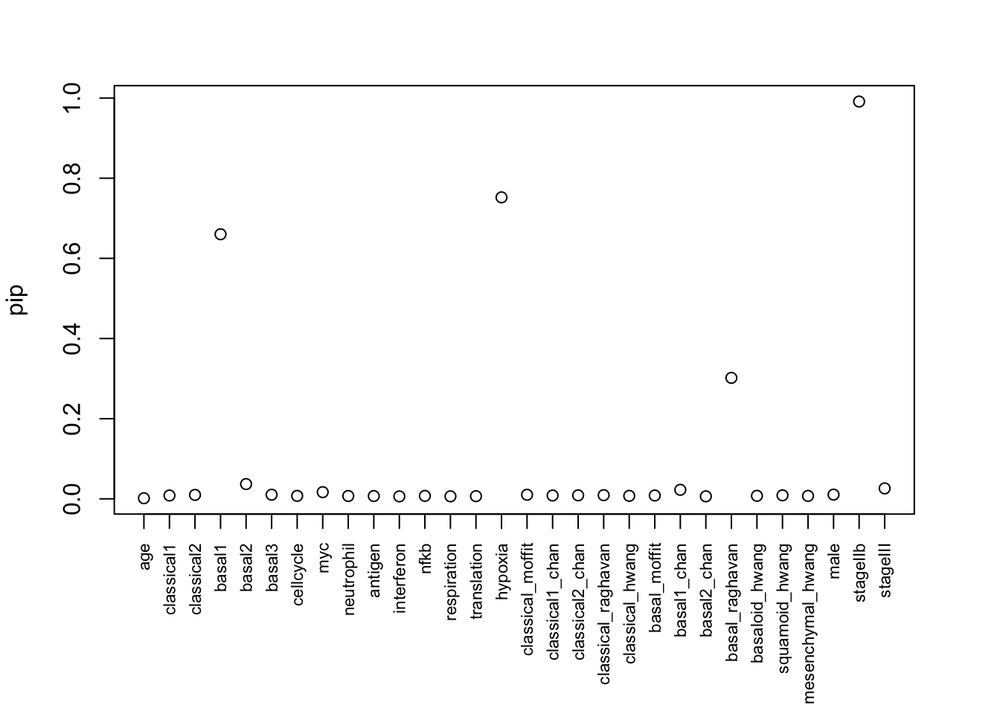

Data application: cancer subtype
Yunqi Yang
6/8/2023
Last updated: 2023-08-28
Checks: 7 0
Knit directory: survival-susie/
This reproducible R Markdown analysis was created with workflowr (version 1.6.2). The Checks tab describes the reproducibility checks that were applied when the results were created. The Past versions tab lists the development history.
Great! Since the R Markdown file has been committed to the Git repository, you know the exact version of the code that produced these results.
Great job! The global environment was empty. Objects defined in the global environment can affect the analysis in your R Markdown file in unknown ways. For reproduciblity it’s best to always run the code in an empty environment.
The command set.seed(20230201) was run prior to running the code in the R Markdown file. Setting a seed ensures that any results that rely on randomness, e.g. subsampling or permutations, are reproducible.
Great job! Recording the operating system, R version, and package versions is critical for reproducibility.
Nice! There were no cached chunks for this analysis, so you can be confident that you successfully produced the results during this run.
Great job! Using relative paths to the files within your workflowr project makes it easier to run your code on other machines.
Great! You are using Git for version control. Tracking code development and connecting the code version to the results is critical for reproducibility.
The results in this page were generated with repository version 256f794. See the Past versions tab to see a history of the changes made to the R Markdown and HTML files.
Note that you need to be careful to ensure that all relevant files for the analysis have been committed to Git prior to generating the results (you can use wflow_publish or wflow_git_commit). workflowr only checks the R Markdown file, but you know if there are other scripts or data files that it depends on. Below is the status of the Git repository when the results were generated:
Ignored files:
Ignored: .DS_Store
Ignored: .Rhistory
Ignored: .Rproj.user/
Ignored: data/.DS_Store
Unstaged changes:
Modified: analysis/run_ser_simple_dat.Rmd
Modified: analysis/ser_survival.Rmd
Modified: data/dsc3/susie.lbf.rds
Note that any generated files, e.g. HTML, png, CSS, etc., are not included in this status report because it is ok for generated content to have uncommitted changes.
These are the previous versions of the repository in which changes were made to the R Markdown (analysis/cancer_subtype.Rmd) and HTML (docs/cancer_subtype.html) files. If you’ve configured a remote Git repository (see ?wflow_git_remote), click on the hyperlinks in the table below to view the files as they were in that past version.
| File | Version | Author | Date | Message |
|---|---|---|---|---|
| Rmd | 256f794 | yunqiyang0215 | 2023-08-28 | wflow_publish("analysis/cancer_subtype.Rmd") |
| html | 6472e73 | yunqiyang0215 | 2023-08-28 | Build site. |
| Rmd | 4ff5354 | yunqiyang0215 | 2023-08-28 | wflow_publish("analysis/cancer_subtype.Rmd") |
| html | 52c701d | yunqiyang0215 | 2023-08-28 | Build site. |
| Rmd | 01ab8dd | yunqiyang0215 | 2023-08-28 | wflow_publish("analysis/cancer_subtype.Rmd") |
| html | ab59186 | yunqiyang0215 | 2023-06-08 | Build site. |
| Rmd | 017ab2a | yunqiyang0215 | 2023-06-08 | wflow_publish("analysis/cancer_subtype.Rmd") |
| html | b693b0d | yunqiyang0215 | 2023-06-08 | Build site. |
| Rmd | 6214ac2 | yunqiyang0215 | 2023-06-08 | wflow_publish("analysis/cancer_subtype.Rmd") |
library(Matrix)
library(pheatmap)
library(My.stepwise)
library(survival)
library(susieR)
library(mvtnorm)# yusha's data
data.combined <- readRDS("./data/combined_data_resectable_v2.rds")
### show the pairwise correlation between program signatures
pheatmap(cor(data.combined[, -c(1:6)]), angle_col = 45)
| Version | Author | Date |
|---|---|---|
| b693b0d | yunqiyang0215 | 2023-06-08 |
### pre-processing
data.combined$male <- ifelse(data.combined$sex=="Male", 1, 0)
data.combined$stageIIb <- ifelse(data.combined$stage=="IIb", 1, 0)
data.combined$stageIII <- ifelse(data.combined$stage=="III-higher", 1, 0)Method 1: stepwise selection
fit.surv <- My.stepwise.coxph(Time = "futime", Status = "event", variable.list = colnames(data.combined)[7:32],
in.variable = c("age", "male", "stageIIb", "stageIII"), data = data.combined)# --------------------------------------------------------------------------------------------------
# Initial Model:
Call:
coxph(formula = as.formula(paste("Surv(", Time, ", ", Status,
") ~ ", paste(in.variable, collapse = "+"), sep = "")), data = data,
method = "efron")
n= 391, number of events= 260
coef exp(coef) se(coef) z Pr(>|z|)
age 0.009578 1.009624 0.006077 1.576 0.11500
male 0.044334 1.045331 0.125222 0.354 0.72331
stageIIb 0.724990 2.064710 0.166412 4.357 1.32e-05 ***
stageIII 0.733226 2.081786 0.272920 2.687 0.00722 **
---
Signif. codes: 0 '***' 0.001 '**' 0.01 '*' 0.05 '.' 0.1 ' ' 1
exp(coef) exp(-coef) lower .95 upper .95
age 1.010 0.9905 0.9977 1.022
male 1.045 0.9566 0.8178 1.336
stageIIb 2.065 0.4843 1.4901 2.861
stageIII 2.082 0.4804 1.2193 3.554
Concordance= 0.564 (se = 0.021 )
Likelihood ratio test= 23.58 on 4 df, p=1e-04
Wald test = 20.87 on 4 df, p=3e-04
Score (logrank) test = 21.62 on 4 df, p=2e-04
--------------- Variance Inflating Factor (VIF) ---------------
Multicollinearity Problem: Variance Inflating Factor (VIF) is bigger than 10 (Continuous Variable) or is bigger than 2.5 (Categorical Variable)
age male stageIIb stageIII
1.038771 1.007114 1.247522 1.271837
# --------------------------------------------------------------------------------------------------
### iter num = 1, Forward Selection by LR Test: + basal1
Call:
coxph(formula = Surv(futime, event) ~ age + male + stageIIb +
stageIII + basal1, data = data, method = "efron")
n= 391, number of events= 260
coef exp(coef) se(coef) z Pr(>|z|)
age 0.010022 1.010072 0.006081 1.648 0.09933 .
male -0.002413 0.997590 0.126249 -0.019 0.98475
stageIIb 0.798619 2.222469 0.168168 4.749 2.04e-06 ***
stageIII 0.845134 2.328289 0.276093 3.061 0.00221 **
basal1 0.494950 1.640417 0.070058 7.065 1.61e-12 ***
---
Signif. codes: 0 '***' 0.001 '**' 0.01 '*' 0.05 '.' 0.1 ' ' 1
exp(coef) exp(-coef) lower .95 upper .95
age 1.0101 0.9900 0.9981 1.022
male 0.9976 1.0024 0.7789 1.278
stageIIb 2.2225 0.4499 1.5984 3.090
stageIII 2.3283 0.4295 1.3553 4.000
basal1 1.6404 0.6096 1.4299 1.882
Concordance= 0.639 (se = 0.019 )
Likelihood ratio test= 70.97 on 5 df, p=6e-14
Wald test = 68.77 on 5 df, p=2e-13
Score (logrank) test = 70.72 on 5 df, p=7e-14
--------------- Variance Inflating Factor (VIF) ---------------
Multicollinearity Problem: Variance Inflating Factor (VIF) is bigger than 10 (Continuous Variable) or is bigger than 2.5 (Categorical Variable)
age male stageIIb stageIII basal1
1.037106 1.006740 1.254546 1.272957 1.009059
# --------------------------------------------------------------------------------------------------
### iter num = 2, Forward Selection by LR Test: + hypoxia
Call:
coxph(formula = Surv(futime, event) ~ age + male + stageIIb +
stageIII + basal1 + hypoxia, data = data, method = "efron")
n= 391, number of events= 260
coef exp(coef) se(coef) z Pr(>|z|)
age 0.012434 1.012512 0.006204 2.004 0.045056 *
male 0.002774 1.002778 0.126399 0.022 0.982492
stageIIb 0.746115 2.108792 0.168610 4.425 9.64e-06 ***
stageIII 0.840562 2.317670 0.276863 3.036 0.002397 **
basal1 0.448779 1.566399 0.071287 6.295 3.07e-10 ***
hypoxia 0.208387 1.231690 0.061243 3.403 0.000667 ***
---
Signif. codes: 0 '***' 0.001 '**' 0.01 '*' 0.05 '.' 0.1 ' ' 1
exp(coef) exp(-coef) lower .95 upper .95
age 1.013 0.9876 1.0003 1.025
male 1.003 0.9972 0.7827 1.285
stageIIb 2.109 0.4742 1.5153 2.935
stageIII 2.318 0.4315 1.3471 3.988
basal1 1.566 0.6384 1.3621 1.801
hypoxia 1.232 0.8119 1.0924 1.389
Concordance= 0.656 (se = 0.019 )
Likelihood ratio test= 82.06 on 6 df, p=1e-15
Wald test = 81.94 on 6 df, p=1e-15
Score (logrank) test = 84.67 on 6 df, p=4e-16
--------------- Variance Inflating Factor (VIF) ---------------
Multicollinearity Problem: Variance Inflating Factor (VIF) is bigger than 10 (Continuous Variable) or is bigger than 2.5 (Categorical Variable)
age male stageIIb stageIII basal1 hypoxia
1.047512 1.021799 1.256722 1.270064 1.024780 1.053455
# --------------------------------------------------------------------------------------------------
### iter num = 3, Forward Selection by LR Test: + respiration
Call:
coxph(formula = Surv(futime, event) ~ age + male + stageIIb +
stageIII + basal1 + hypoxia + respiration, data = data, method = "efron")
n= 391, number of events= 260
coef exp(coef) se(coef) z Pr(>|z|)
age 0.014419 1.014523 0.006246 2.309 0.02097 *
male -0.003532 0.996474 0.126232 -0.028 0.97768
stageIIb 0.704692 2.023224 0.169493 4.158 3.22e-05 ***
stageIII 0.794546 2.213435 0.277323 2.865 0.00417 **
basal1 0.459202 1.582810 0.071975 6.380 1.77e-10 ***
hypoxia 0.274436 1.315789 0.069568 3.945 7.98e-05 ***
respiration -0.147670 0.862716 0.074693 -1.977 0.04804 *
---
Signif. codes: 0 '***' 0.001 '**' 0.01 '*' 0.05 '.' 0.1 ' ' 1
exp(coef) exp(-coef) lower .95 upper .95
age 1.0145 0.9857 1.0022 1.0270
male 0.9965 1.0035 0.7781 1.2762
stageIIb 2.0232 0.4943 1.4513 2.8204
stageIII 2.2134 0.4518 1.2853 3.8118
basal1 1.5828 0.6318 1.3746 1.8226
hypoxia 1.3158 0.7600 1.1481 1.5080
respiration 0.8627 1.1591 0.7452 0.9987
Concordance= 0.662 (se = 0.019 )
Likelihood ratio test= 85.98 on 7 df, p=8e-16
Wald test = 86.43 on 7 df, p=7e-16
Score (logrank) test = 88.21 on 7 df, p=3e-16
--------------- Variance Inflating Factor (VIF) ---------------
Multicollinearity Problem: Variance Inflating Factor (VIF) is bigger than 10 (Continuous Variable) or is bigger than 2.5 (Categorical Variable)
age male stageIIb stageIII basal1 hypoxia
1.068127 1.022373 1.267904 1.274082 1.027843 1.255066
respiration
1.231888
# ==================================================================================================
*** Stepwise Final Model (in.lr.test: sle = 0.15; out.lr.test: sls = 0.15; variable selection restrict in vif = 999):
Call:
coxph(formula = Surv(futime, event) ~ age + male + stageIIb +
stageIII + basal1 + hypoxia + respiration, data = data, method = "efron")
n= 391, number of events= 260
coef exp(coef) se(coef) z Pr(>|z|)
age 0.014419 1.014523 0.006246 2.309 0.02097 *
male -0.003532 0.996474 0.126232 -0.028 0.97768
stageIIb 0.704692 2.023224 0.169493 4.158 3.22e-05 ***
stageIII 0.794546 2.213435 0.277323 2.865 0.00417 **
basal1 0.459202 1.582810 0.071975 6.380 1.77e-10 ***
hypoxia 0.274436 1.315789 0.069568 3.945 7.98e-05 ***
respiration -0.147670 0.862716 0.074693 -1.977 0.04804 *
---
Signif. codes: 0 '***' 0.001 '**' 0.01 '*' 0.05 '.' 0.1 ' ' 1
exp(coef) exp(-coef) lower .95 upper .95
age 1.0145 0.9857 1.0022 1.0270
male 0.9965 1.0035 0.7781 1.2762
stageIIb 2.0232 0.4943 1.4513 2.8204
stageIII 2.2134 0.4518 1.2853 3.8118
basal1 1.5828 0.6318 1.3746 1.8226
hypoxia 1.3158 0.7600 1.1481 1.5080
respiration 0.8627 1.1591 0.7452 0.9987
Concordance= 0.662 (se = 0.019 )
Likelihood ratio test= 85.98 on 7 df, p=8e-16
Wald test = 86.43 on 7 df, p=7e-16
Score (logrank) test = 88.21 on 7 df, p=3e-16
--------------- Variance Inflating Factor (VIF) ---------------
Multicollinearity Problem: Variance Inflating Factor (VIF) is bigger than 10 (Continuous Variable) or is bigger than 2.5 (Categorical Variable)
age male stageIIb stageIII basal1 hypoxia
1.068127 1.022373 1.267904 1.274082 1.027843 1.255066
respiration
1.231888 Method 2: survival susie
source("./code/surv_susie_helper.R")
devtools::load_all("/Users/nicholeyang/Desktop/logisticsusie")ℹ Loading logisticsusiefit_coxph <- ser_from_univariate(surv_uni_fun)
#### parameter settings
L = 10
maxiter = 1e3
X = data.combined[, c(5, 7:35)]
X = as.matrix(X)
p = ncol(X)
## Create survival object
y <- Surv(data.combined$futime, data.combined$event)
fit.susie <- ibss_from_ser(X, y, L = L, prior_variance = 1., prior_weights = rep(1/p, p), tol = 1e-3, maxit = maxiter,
estimate_intercept = TRUE, ser_function = fit_coxph)22.487 sec elapsedpip <- logisticsusie:::get_pip(fit.susie$alpha)
effect_estimate <- colSums(fit.susie$alpha * fit.susie$mu)
class(fit.susie) = "susie"
cs <- susie_get_cs(fit.susie, X)# Set wider margins to accommodate the labels
par(mar = c(7, 4, 3, 3))
plot(pip, xaxt = "n", xlab = "")
axis(1, at=1:30, labels=colnames(X), las=2, cex.axis = 0.7, xlab = "")
| Version | Author | Date |
|---|---|---|
| b693b0d | yunqiyang0215 | 2023-06-08 |
par(mar = c(7, 4, 3, 3))
plot(effect_estimate, xaxt = "n", xlab = "", ylab = "Effect size estimate")
axis(1, at=1:30, labels=colnames(X), las=2, cex.axis = 0.7, xlab = "")
| Version | Author | Date |
|---|---|---|
| b693b0d | yunqiyang0215 | 2023-06-08 |
cs$cs
$cs$L2
[1] 29
$cs$L1
[1] 4 5 24
$purity
min.abs.corr mean.abs.corr median.abs.corr
L2 1.0000000 1.0000000 1.0000000
L1 0.9072091 0.9186528 0.9078447
$cs_index
[1] 2 1
$coverage
[1] 0.9913230 0.9790526
$requested_coverage
[1] 0.95fit.susie$prior_vars [1] 0.1785702078 0.2870258412 0.0304814088 0.0004761711 0.0004415317
[6] 0.0004345119 0.0004308481 0.0004286010 0.0004271116 0.0004260817Simulated Gaussian data with p = 30
library(mvtnorm)set.seed(500)
cmat = cor(data.combined[, -c(1:6)])
n = 400
p = ncol(cmat)
X = rmvnorm(n=n, sigma=cmat, method="chol")
X[, c(25:28)] = ifelse(X[, c(25:28)] > 0, 1, 0)
b = rep(0, p)
effect_indx = sample(1:p, size = 5, replace = FALSE)
b[effect_indx] = rnorm(5, sd = 0.3)
y = X %*% b + rnorm(n)summary(lm(y ~ X[,effect_indx[1]]))
Call:
lm(formula = y ~ X[, effect_indx[1]])
Residuals:
Min 1Q Median 3Q Max
-3.7319 -0.6994 -0.0231 0.6973 3.5448
Coefficients:
Estimate Std. Error t value Pr(>|t|)
(Intercept) -0.25014 0.05766 -4.338 1.82e-05 ***
X[, effect_indx[1]] -0.52505 0.06142 -8.548 2.72e-16 ***
---
Signif. codes: 0 '***' 0.001 '**' 0.01 '*' 0.05 '.' 0.1 ' ' 1
Residual standard error: 1.148 on 398 degrees of freedom
Multiple R-squared: 0.1551, Adjusted R-squared: 0.153
F-statistic: 73.07 on 1 and 398 DF, p-value: 2.717e-16summary(lm(y ~ X[,effect_indx[2]]))
Call:
lm(formula = y ~ X[, effect_indx[2]])
Residuals:
Min 1Q Median 3Q Max
-3.6736 -0.6834 -0.0006 0.6509 3.7880
Coefficients:
Estimate Std. Error t value Pr(>|t|)
(Intercept) -0.25640 0.05508 -4.655 4.43e-06 ***
X[, effect_indx[2]] -0.61202 0.05645 -10.842 < 2e-16 ***
---
Signif. codes: 0 '***' 0.001 '**' 0.01 '*' 0.05 '.' 0.1 ' ' 1
Residual standard error: 1.097 on 398 degrees of freedom
Multiple R-squared: 0.228, Adjusted R-squared: 0.2261
F-statistic: 117.6 on 1 and 398 DF, p-value: < 2.2e-16summary(lm(y ~ X[,effect_indx[3]]))
Call:
lm(formula = y ~ X[, effect_indx[3]])
Residuals:
Min 1Q Median 3Q Max
-3.7295 -0.8176 0.0316 0.7989 3.6887
Coefficients:
Estimate Std. Error t value Pr(>|t|)
(Intercept) -0.06875 0.08605 -0.799 0.425
X[, effect_indx[3]] -0.28140 0.12420 -2.266 0.024 *
---
Signif. codes: 0 '***' 0.001 '**' 0.01 '*' 0.05 '.' 0.1 ' ' 1
Residual standard error: 1.241 on 398 degrees of freedom
Multiple R-squared: 0.01273, Adjusted R-squared: 0.01025
F-statistic: 5.133 on 1 and 398 DF, p-value: 0.02401summary(lm(y ~ X[,effect_indx[4]]))
Call:
lm(formula = y ~ X[, effect_indx[4]])
Residuals:
Min 1Q Median 3Q Max
-3.9185 -0.7133 -0.0039 0.7496 3.6768
Coefficients:
Estimate Std. Error t value Pr(>|t|)
(Intercept) -0.24426 0.06095 -4.008 7.33e-05 ***
X[, effect_indx[4]] 0.30494 0.05890 5.177 3.58e-07 ***
---
Signif. codes: 0 '***' 0.001 '**' 0.01 '*' 0.05 '.' 0.1 ' ' 1
Residual standard error: 1.209 on 398 degrees of freedom
Multiple R-squared: 0.0631, Adjusted R-squared: 0.06075
F-statistic: 26.8 on 1 and 398 DF, p-value: 3.58e-07summary(lm(y ~ X[,effect_indx[5]]))
Call:
lm(formula = y ~ X[, effect_indx[5]])
Residuals:
Min 1Q Median 3Q Max
-3.3891 -0.6948 -0.0106 0.8151 4.0824
Coefficients:
Estimate Std. Error t value Pr(>|t|)
(Intercept) -0.24877 0.05607 -4.436 1.19e-05 ***
X[, effect_indx[5]] 0.53380 0.05368 9.944 < 2e-16 ***
---
Signif. codes: 0 '***' 0.001 '**' 0.01 '*' 0.05 '.' 0.1 ' ' 1
Residual standard error: 1.118 on 398 degrees of freedom
Multiple R-squared: 0.199, Adjusted R-squared: 0.197
F-statistic: 98.88 on 1 and 398 DF, p-value: < 2.2e-16b [1] 0.0000000 0.0000000 0.0000000 0.0000000 0.0000000 0.0000000
[7] 0.0000000 0.0000000 0.0000000 0.0000000 0.0000000 0.0000000
[13] 0.0000000 0.0000000 0.4433046 0.0000000 -0.1683850 0.0000000
[19] 0.0000000 0.0000000 -0.6026197 0.0000000 0.2718256 0.0000000
[25] 0.0000000 0.0000000 0.0000000 -0.4068480 0.0000000effect_indx[1] 23 21 28 17 15par(mfrow = c(1,2))
res <- susie(X,y,L=10)
plot(coef(res)[-1],pch = 20)
plot(res$pip)
| Version | Author | Date |
|---|---|---|
| 52c701d | yunqiyang0215 | 2023-08-28 |
res$sets$cs
$cs$L2
[1] 21
$cs$L1
[1] 1 15 16 18
$purity
min.abs.corr mean.abs.corr median.abs.corr
L2 1.000000 1.0000000 1.0000000
L1 0.951815 0.9653002 0.9664299
$cs_index
[1] 2 1
$coverage
[1] 0.9855223 0.9968472
$requested_coverage
[1] 0.95
sessionInfo()R version 4.1.1 (2021-08-10)
Platform: x86_64-apple-darwin20.6.0 (64-bit)
Running under: macOS Monterey 12.0.1
Matrix products: default
BLAS: /usr/local/Cellar/openblas/0.3.18/lib/libopenblasp-r0.3.18.dylib
LAPACK: /usr/local/Cellar/r/4.1.1_1/lib/R/lib/libRlapack.dylib
locale:
[1] en_US.UTF-8/en_US.UTF-8/en_US.UTF-8/C/en_US.UTF-8/en_US.UTF-8
attached base packages:
[1] stats graphics grDevices utils datasets methods base
other attached packages:
[1] logisticsusie_0.0.0.9004 testthat_3.1.0 mvtnorm_1.1-3
[4] susieR_0.12.35 survival_3.2-11 My.stepwise_0.1.0
[7] pheatmap_1.0.12 Matrix_1.5-3 workflowr_1.6.2
loaded via a namespace (and not attached):
[1] sass_0.4.4 pkgload_1.2.3 jsonlite_1.7.2 splines_4.1.1
[5] carData_3.0-5 bslib_0.4.1 mixsqp_0.3-43 highr_0.9
[9] yaml_2.2.1 remotes_2.4.2 sessioninfo_1.1.1 pillar_1.6.4
[13] lattice_0.20-44 glue_1.4.2 digest_0.6.28 RColorBrewer_1.1-2
[17] promises_1.2.0.1 colorspace_2.0-2 htmltools_0.5.5 httpuv_1.6.3
[21] plyr_1.8.6 pkgconfig_2.0.3 devtools_2.4.2 purrr_0.3.4
[25] scales_1.1.1 processx_3.8.1 whisker_0.4 later_1.3.0
[29] git2r_0.28.0 tibble_3.1.5 generics_0.1.2 car_3.1-1
[33] tictoc_1.1 ggplot2_3.3.5 usethis_2.1.3 ellipsis_0.3.2
[37] cachem_1.0.6 withr_2.5.0 cli_3.1.0 magrittr_2.0.1
[41] crayon_1.4.1 memoise_2.0.1 evaluate_0.14 ps_1.6.0
[45] fs_1.5.0 fansi_0.5.0 pkgbuild_1.2.0 RcppZiggurat_0.1.6
[49] tools_4.1.1 prettyunits_1.1.1 lifecycle_1.0.1 matrixStats_0.63.0
[53] stringr_1.4.0 munsell_0.5.0 irlba_2.3.5 callr_3.7.3
[57] Rfast_2.0.6 compiler_4.1.1 jquerylib_0.1.4 rlang_1.1.1
[61] grid_4.1.1 rstudioapi_0.13 rmarkdown_2.11 gtable_0.3.0
[65] abind_1.4-5 reshape_0.8.9 R6_2.5.1 zoo_1.8-11
[69] knitr_1.36 dplyr_1.0.7 fastmap_1.1.0 utf8_1.2.2
[73] rprojroot_2.0.2 desc_1.4.0 stringi_1.7.5 parallel_4.1.1
[77] Rcpp_1.0.8.3 vctrs_0.3.8 tidyselect_1.1.1 xfun_0.27
[81] lmtest_0.9-40